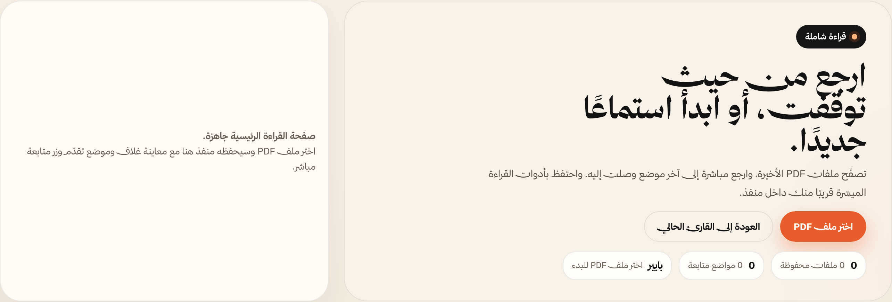
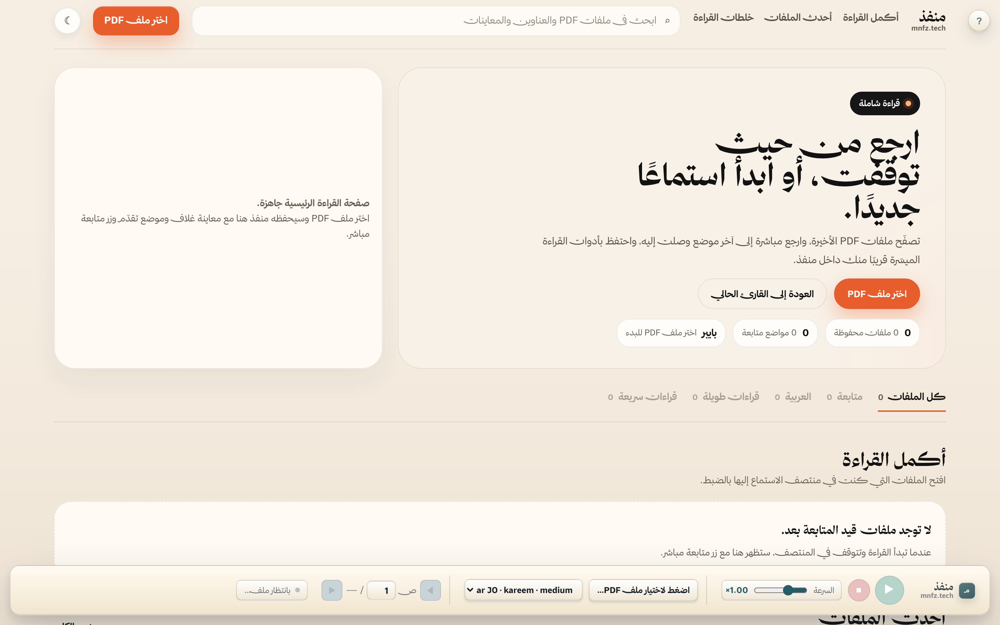
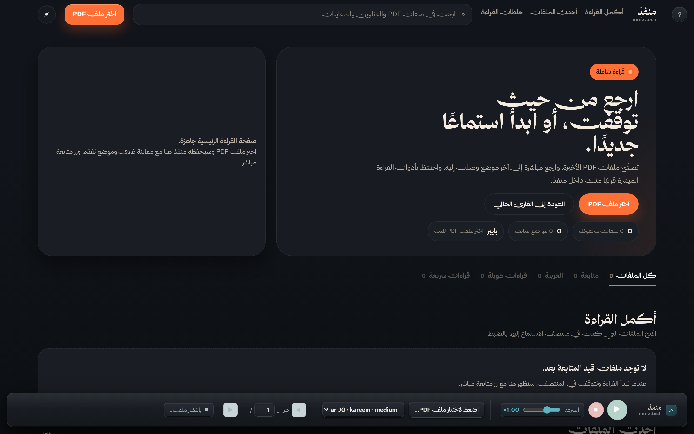
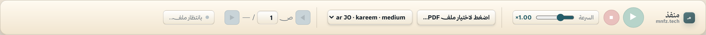
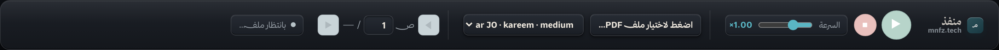
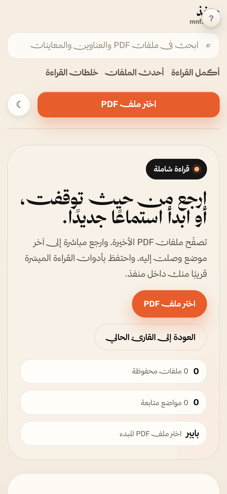
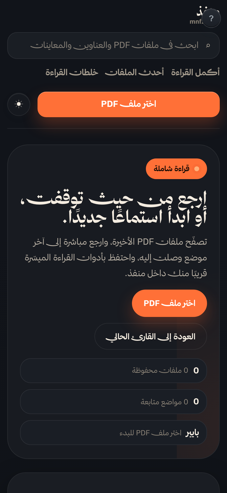

Why Scaling Innovation Grant: Mnfz is past the concept and simple-prototype stages — it is a working product with 10 Arabic neural voices across 5 dialects, on-device playback, library persistence, study notes, and a desktop wrapper. The Scaling tier explicitly funds "developing a robust prototype, conducting targeted pilot programs" with a moderate budget, which matches the project's maturity and the planned 4-month pilot precisely.
Mnfz is an Arabic-first audiobook that reads Arabic educational digital content. Blind and low-vision learners in Arabic-language classrooms study from a lot of PDFs — school books, lecture handouts, university papers, exam revision sheets, and Islamic study materials — yet no natural neural Arabic speech version of these documents is available to them. منفذ fills in the blanks. It turns any Arabic PDF into natural neural speech across 10 Arabic neural voices spanning five dialects (Saudi Arabia, Egypt, Jordan, UAE, Qatar), with word-level highlighting, page-by-page playback, built-in study notes on the same page, and on-device voice models that let students keep reading without any network — even while travelling.
Mnfz runs fully on the learner's own device. The PDF stays on the device, the voices run on the device, notes and reading progress live on the device, and nothing is uploaded to outside servers. Exam materials, personal notes, and study habits never leave the learner's hands. منفذ becomes an inclusive, directly usable format for these materials — not a static PDF, not a cloud AI assistant, but an on-hand audiobook ready to use.
"منفذ" كتاب صوتي عربي يقرأ المحتوى التعليمي العربي الرقمي. الطلبة المكفوفون وضعاف البصر في الصفوف العربية يدرسون من ملفات كثيرة — الكتب المدرسية، وأوراق المحاضرات، والأبحاث الجامعية، ومراجع الامتحانات، والمواد الإسلامية — ولا تتوفّر لهم صيغة صوتية عصبية طبيعية بالعربية لهذه الملفات. يسدّ "منفذ" هذه الفجوة. يحوّل أي وثيقة عربية إلى نطق عصبي طبيعي عبر عشرة أصوات عربية تغطّي خمس لهجات (السعودية، مصر، الأردن، الإمارات، قطر)، مع تتبّع الكلمة المنطوقة بصريًا، وقراءة صفحة-صفحة، وملاحظات دراسية على الصفحة نفسها، ونماذج صوتية محلية تتيح للطالب القراءة بلا اتصال بالإنترنت — حتى أثناء السفر.
يعمل "منفذ" بالكامل على جهاز المتعلم. الوثيقة تبقى على الجهاز، والأصوات تعمل على الجهاز، والملاحظات ومواضع القراءة محفوظة على الجهاز، ولا يُرفع شيء إلى خوادم خارجية. مواد الامتحانات، والملاحظات الشخصية، وعادات الدراسة لا تغادر الطالب أبدًا. يصبح "منفذ" تنسيقًا دامجًا جاهزًا للاستخدام مباشرة — ليس ملفًا جامدًا، ولا مساعدًا ذكيًا في السحابة، بل كتاب صوتي في متناول اليد جاهز للاستخدام.
What makes Mnfz unique is the combination of three things that no other Arabic reading tool puts together. First, it is Arabic-first by design, not an English product with Arabic bolted on. Second, it works at the document level, not the screen-reader level — the student opens the PDF inside Mnfz and starts listening, with no need for NVDA, VoiceOver, or any external assistive software. Third, it runs on the learner's own device, so the PDF and the study notes never leave the student.
On top of that, Mnfz gives the learner ten Arabic neural voices across five regional dialects — Saudi, Egyptian, Jordanian, Emirati, Qatari — so the learner can pick a voice that matches their own way of speaking. This matters for comprehension and for the learner's connection to the material. Most Arabic TTS products offer one or two voices in formal Arabic only.
Add word-level highlight that follows the spoken word, page-by-page playback, in-page study notes, and full offline reading via on-device voice models, and Mnfz becomes a complete audiobook reading experience for Arabic educational documents — not a feature buried inside a larger accessibility tool.
ما يميّز "منفذ" هو الجمع بين ثلاثة أشياء لم تجمعها أي أداة قراءة عربية أخرى. أولًا، هو عربي بالتصميم، وليس منتجًا إنجليزيًا أُضيفت إليه العربية لاحقًا. ثانيًا، يعمل على مستوى الوثيقة، لا على مستوى قارئ الشاشة — يفتح الطالب الوثيقة داخل "منفذ" مباشرة ويبدأ الاستماع، دون الحاجة إلى NVDA أو VoiceOver أو أي برنامج مساعد خارجي. ثالثًا، يعمل على جهاز المتعلم نفسه، فالوثيقة والملاحظات لا تغادر الطالب أبدًا.
إضافةً إلى ذلك، يوفّر "منفذ" عشرة أصوات عربية عصبية تغطّي خمس لهجات إقليمية — السعودية، المصرية، الأردنية، الإماراتية، والقطرية — فيختار المتعلم صوتًا قريبًا من لهجته. هذا يُحدث فارقًا في الفهم وفي ارتباط الطالب بالمادة. معظم منتجات النطق العربية تقدّم صوتًا أو صوتين بالفصحى فقط.
وإذا أضفنا تتبّع الكلمة المنطوقة بصريًا، والقراءة صفحة-صفحة، والملاحظات الدراسية على الصفحة نفسها، والقراءة الكاملة دون اتصال بالإنترنت عبر نماذج صوتية محلية، يصبح "منفذ" تجربة كتاب صوتي متكاملة للمحتوى التعليمي العربي — لا ميزةً مدفونة داخل أداة وصول أكبر.







| Tier | Disability | Justification |
|---|---|---|
| Primary | Sensory — Blindness & Low Vision | The anchor population: Arabic-first neural audio + word-level highlighting for reading digital study material independently. |
| Secondary | Learning — Dyslexia | TTS with synchronized highlighting is the canonical dyslexia accommodation. |
| Secondary | ADHD / Attention | Focus mode and reading guide (shipped features) directly support attention regulation while reading. |
Scope kept deliberately tight: Mada reviewers reward a focused target population over a sprawling one. Every checked disability is backed by a real, shipped feature.
Expand to full coverage of Gulf, Egyptian, Levantine, Maghrebi, and Modern Standard Arabic, tuned for educational content: equations read as spoken phrases, diacritics respected, paragraph-level pacing for long study sessions. Every voice runs on-device.
A 6-month cohort study with Mada and Qatar's inclusive education programs, measuring reading time, comprehension, and the one metric that matters: can the learner finish a document independently?
A local open-weights language model (llama.cpp / MLX) that answers questions about the document, summarizes chapters, and quizzes the learner — without a single byte leaving the device.
Structured feedback cycles with blind, low-vision, dyslexic, and ADHD students. Each release validated against WCAG 2.2 AA and the question "can I study independently?"
Release the extraction-to-audio pipeline, voice configuration, and access-preference patterns as open documentation, so the next Arabic education tool does not start from zero.
| Activity | Maps to Mada criteria |
|---|---|
| 1 — Voice scale | Inclusive content format · Arabic-first |
| 2 — School pilot | Equal learning · measurable impact |
| 3 — On-device AI agent | Independence · data sovereignty · innovation |
| 4 — Co-design | User-led design · WCAG alignment |
| 5 — Open toolkit | Ecosystem multiplier · sustainability |
دورة مشروع التطوير 4 أشهر بحد أقصى، مقسّمة إلى ثلاثة معالم. جميع المهام بحثية وابتكارية فقط.
المهام:
المُسلَّمات:
المهام:
المُسلَّمات:
المهام:
المُسلَّمات:
| المعلم | المدة | التكلفة (ريال قطري) |
|---|---|---|
| الأول — البحث والتصميم | شهر واحد | 25,000 |
| الثاني — التطوير الأساسي | شهران | 45,000 |
| الثالث — التحقق والإطلاق | شهر واحد | 20,000 |
| الإجمالي | أربعة أشهر | 90,000 |
منفذ لا يُبنى كأداة تُلقى على المستخدم الكفيف بعد اكتمالها، بل يُبنى معه من أول سطر كود. ثلاث ركائز تحكم كل قرار: عربية أولاً بالتصميم لا كإضافة لاحقة، على الجهاز أولاً لا على السحابة، ومع المستخدم لا له.
منهجية التطوير دورة تكرارية من أربع مراحل: نبدأ بجلسات بحث تشاركي مع المتعلمين المكفوفين وضعاف البصر وذوي عسر القراءة وذوي اضطراب فرط الحركة. نُصمّم الحلول معهم، لا لهم. ننفّذ تقنيًا مع اختبارات آلية شاملة ومراجعة معايير الوصول الدولية على كل تغيير. ثم نُجري تحققًا ميدانيًا يقيس زمن القراءة والفهم والاستقلالية قبل أي إصدار عام.
التنفيذ ثلاث مراحل واضحة. المرحلة الأولى مُنجَزة — منفذ يعمل اليوم بعشرة أصوات عربية عبر خمس لهجات، استخراج نص ذكي، تمييز متزامن على مستوى الكلمة، مكتبة محلية على الجهاز، ووضع تركيز للمتعلمين ذوي اضطراب فرط الحركة. المرحلة الثانية تموّلها منحة مدى خلال أربعة أشهر: توسيع الأصوات، بناء وكيل دراسة عربي محلي، تجربة ميدانية مع طلاب قطريين، واعتماد رسمي لمعايير الوصول. المرحلة الثالثة بعد المنحة: نشر مؤسسي عبر الخليج، ترخيص المنظومة للناشرين، مجتمع ممارسة عربي للإتاحة، وإصدارات الموبايل.
المخاطر مُحسَّبة سلفًا: نموذج صوت هجين يمنع الاحتجاز التقني، نماذج لغوية صغيرة تعمل على الأجهزة المحدودة، شراكة مدى تفتح وصولًا فوريًا للمتطوعين، ومعالم مستقلة تُسلّم قيمة بمفردها لو تأخّر أحدها.
كل إصدار يمرّ بثلاث طبقات تحقق: اختبارات تقنية آلية، تدقيق إتاحة مستقل، وموافقة مسبقة من مستخدمين حقيقيين. منفذ ليس مشروعًا بحثيًا منتظرًا، بل منتج حيّ يتطور مع كل تجربة — منحة مدى تموّل خطوة منطقية تالية واضحة، لا قفزة في المجهول. هذا ما يجعله منخفض المخاطرة، عالي الأثر، وقابلاً للقياس من اليوم الأول.
استدامة منفذ مبنية على ثلاث حقائق هيكلية تجعل بقاءه رخيصًا وقابلًا للاستمرار دون منح متكررة: التكلفة التشغيلية شبه صفرية لأن كل شيء يعمل على جهاز المتعلم بلا فواتير سحابية تنمو مع كل مستخدم، القاعدة مفتوحة المصدر فمجتمع المطورين يساهم في الصيانة دون فريق كبير مكلف، والمتعلم ذو الإعاقة لا يدفع أبدًا — أساس أخلاقي قبل أن يكون نموذجًا تجاريًا — فالإيرادات تأتي من المؤسسات والمنظومة لا من الفئة المستهدفة.
السنة الأولى: نُتمّ مشروع المنحة ونُطلق الإصدار الثاني، نوقّع أول عقود الترخيص المؤسسي مع مدارس وجامعات تجريبية في قطر، ونبني محفظة أدلة الأثر من التجربة الميدانية. الهدف المالي: تغطية تكاليف التشغيل الأساسية.
السنة الثانية: نوسّع الترخيص المؤسسي عبر الخليج مستندين إلى أدلة السنة الأولى، نُطلق واجهة الأصوات العربية البرمجية المدفوعة للمطورين، ونبدأ ترخيص المنظومة للناشرين ومزودي أنظمة إدارة التعلم. الهدف المالي: تجاوز نقطة التعادل وبدء تحقيق هامش ربح.
السنة الثالثة: نصل إلى محفظة عملاء مؤسسيين مستقرة بإيرادات سنوية متجددة، ونعقد شراكات إقليمية مع وزارات التعليم. نُعيد استثمار الفائض في أصوات ولهجات جديدة وفي وكيل الدراسة. الهدف المالي: فائض تشغيلي يموّل التطوير بالكامل دون أي منحة إضافية.
الاستدامة لا تعتمد على مصدر واحد بل على أربعة مصادر مستقلة تتكامل: الترخيص المؤسسي قاعدةً ثابتة، ترخيص المنظومة للناشرين والبوابات الحكومية، واجهة الأصوات البرمجية بدخل ينمو مع التبنّي، والخدمات المهنية من أصوات مخصصة وتكامل. إذا تعثّر مصدر حملته البقية.
هكذا يتحول منفذ من مشروع يعيش على المنح إلى منتج يعيش على قيمته الحقيقية — منخفض التكاليف، متعدد الدخل، ومستقل ماليًا قبل نهاية السنة الثالثة. ولأن التكاليف لا تنمو مع عدد المستخدمين، كل عميل جديد يضيف هامشًا لا عبئًا.